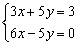

聯立二元一次方程式(II)(分數版)
程式可計算聯立二元一次方程的解。若輸入的係數為整數，答案會以分數形式表示。
程式編寫日期: 2007年2月5日
程式(37步)
| ENT 1 | Kin 2 | Kin 3 | ENT 0 | Kin 4 |
| Kin 5 | ENT 2 | Kin 6 | Kin 1 | ENT 0 |
| Kin × 5 | Kin × 6 | ENT 1 | Kin × 3 | Kin × 1 |
| ENT 3 | Kin × 2 | Kin × 4 | Kout 5 | Kin - 3 |
| Kout 4 | Kin - 1 | Kout 6 | Kin - 2 | 1 |
| a b/c | 2 | Kin ÷ 1 | Kin ÷ 2 | X←→K3 |
| Kin ÷ 3 | X←→K3 | Kin × 1 | Kin × 2 | Kout 1 |
| HLT | Kout 2 | MODE . |
例題1: 解聯立方程 :

按 P1 再按 1 RUN 1 RUN 7 RUN 1 RUN 1 +/- RUN 1 RUN (顯示4) RUN (顯示3)
因此解答為 x = 4 及 y = 3.
程式執行完結後，按 Kout 1 及Kout 2分別顯示x的值及y的值。
例題2: 解聯立方程 :

按 P1 再按 3 RUN 5 RUN 3 RUN 6 RUN 5 +/- RUN
0 RUN (顯示 x值為1/3) RUN (顯示 y值為2/5)
註: 若果答案為帶分數可以再按 d/c 轉化為假分數。